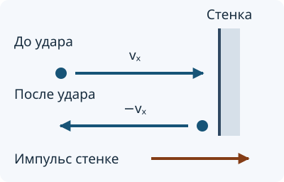

Идеальный газ в МКТ. Основное уравнение МКТ
Датчик давления в закрытом сосуде показывает устойчивое значение, хотя молекулы газа ударяются о стенки в разные моменты. Удар одной молекулы длится очень недолго. Когда таких ударов много, датчик регистрирует их среднее действие. Молекулярно-кинетическая теория (МКТ) связывает это давление с числом молекул в единице объёма и энергией их движения.
Модель идеального газа
При упругом столкновении сохраняется суммарная кинетическая энергия сталкивающихся тел. У неподвижной стенки нормальная составляющая скорости молекулы меняет знак, а касательная сохраняется. Модель хорошо описывает достаточно разреженный газ вдали от условий конденсации. При сильном сжатии или вблизи конденсации размеры частиц и их взаимодействие становятся существенными.
Концентрация \(n\) показывает, сколько частиц приходится на единицу объёма.
Здесь \(N\) — число частиц, \(V\) — объём газа. Концентрацию измеряют в \(\text{м}^{-3}\). Количество вещества \(\nu\) измеряют в молях. Из связи \(N=\nu N_\mathrm{A}\) можно найти концентрацию, если известны \(\nu\) и \(V\).
От удара молекулы к давлению
Рассмотрим кубический сосуд со стороной \(L\). Ось \(x\) направим вправо, перпендикулярно правой стенке. Пусть молекула массы \(m_0\) летит к ней с проекцией скорости \(v_x>0\). После отскока проекция равна \(-v_x\). Проекция импульса молекулы изменилась на \(-2m_0v_x\), а стенке передан импульс \(2m_0v_x\) вправо.

В простой модели вывода проследим за молекулой, которая между ударами о стенки движется без столкновений с другими молекулами. Чтобы снова удариться о правую стенку, она проходит вдоль оси \(x\) путь \(2L\). Интервал между ударами равен \(2L/v_x\). Средняя сила, с которой молекула действует на правую стенку, равна переданному импульсу, делённому на этот интервал.
Для всех \(N\) одинаковых молекул складываем силы и делим на площадь стенки \(L^2\). Поскольку \(V=L^3\), получаем
Черта означает среднее по молекулам. В покоящемся газе в равновесии нет выделенного направления движения, поэтому средние квадраты проекций равны.
Коэффициент \(1/3\) возникает из трёх равноправных направлений. Тот же результат применим к идеальному газу в равновесии с учётом упругих столкновений между молекулами.
Основное уравнение МКТ
В уравнение входит среднее значение квадрата скорости. Если задана среднеквадратичная скорость \(v_{\text{кв}}=\sqrt{\overline{v^2}}\), в формулу подставляют \(v_{\text{кв}}^2\). Даже когда средняя скорость как вектор равна нулю, молекулы продолжают двигаться и давление сохраняется.
То же уравнение можно записать через плотность газа \(\rho=nm_0\).
При неизменной средней энергии повышение концентрации увеличивает число ударов о стенку. При неизменной концентрации рост средней энергии означает, что молекулы в среднем движутся быстрее и передают стенке больше импульса за единицу времени.
Разобранные примеры
Давление по плотности и скорости
Газ в сосуде
Плотность газа равна \(1{,}2\ \text{кг/м}^3\), среднеквадратичная скорость молекул — \(500\ \text{м/с}\). Подставим эти значения в формулу для давления.
Энергия молекулы по давлению и концентрации
Обратная задача
В сосуде объёмом \(2{,}0\ \text{л}\) находится \(5{,}0\cdot10^{22}\) молекул газа под давлением \(100\ \text{кПа}\). Сначала найдём концентрацию.
Теперь выразим среднюю кинетическую энергию одной молекулы.
Краткий итог
- Давление газа возникает при передаче импульса стенкам сосуда.
- Концентрация \(n=N/V\) показывает число молекул в единице объёма.
- В равновесии на каждое направление приходится треть среднего квадрата скорости. Основное уравнение МКТ связывает давление с концентрацией и средней энергией поступательного движения молекул.
Проверь себя
Вопросы для самопроверки
1. При каких условиях реальный газ хорошо описывается моделью идеального газа? 2. Что происходит с составляющими скорости при упругом ударе о неподвижную стенку? 3. Откуда в основном уравнении МКТ берётся коэффициент \(1/3\)? 4. Почему газ давит на стенки, если средняя скорость молекул как вектор равна нулю?
Задачи для самостоятельной работы
- В сосуде объёмом \(4{,}0\ \text{л}\) находится \(8{,}0\cdot10^{22}\) молекул. Найдите концентрацию. Средняя энергия поступательного движения одной молекулы равна \(4{,}5\cdot10^{-21}\ \text{Дж}\). Найдите давление.
- Газ плотностью \(1{,}5\ \text{кг/м}^3\) оказывает давление \(80\ \text{кПа}\). Найдите среднеквадратичную скорость молекул.
- В герметичном сосуде газ сжали до половины исходного объёма. После теплообмена среднеквадратичная скорость вернулась к исходной. Во сколько раз изменилось давление? Объясните ответ через концентрацию.
- В первом сосуде концентрация молекул вдвое больше, чем во втором, а средняя кинетическая энергия одной молекулы втрое меньше. Сравните давления.
- Молекула массой \(4{,}8\cdot10^{-26}\ \text{кг}\) упруго ударилась о стенку. Перед ударом её нормальная составляющая скорости равна \(300\ \text{м/с}\) и направлена к стенке. Найдите модуль импульса, переданного стенке. Как изменится результат, если увеличить только касательную составляющую скорости?